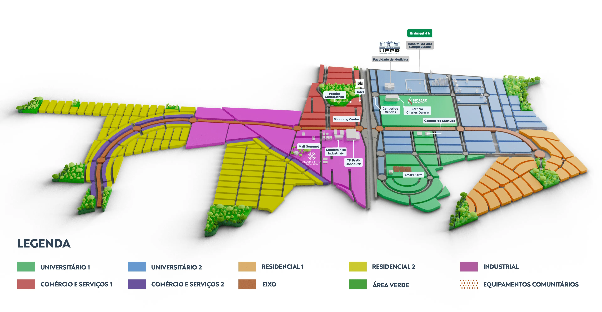

|
Sobre o Biopark | Empresas | Trabalhe conosco |
Conheça o Território
Nós te ajudamos a transformar
a realidade do seu negócio
O Ecossistema de inovação criado pelo Biopark integra educação de excelência, empreendedorismo, inovação e ótimas oportunidades de negócios. Com o objetivo de atingir população de 75 mil pessoas e gerar mais de 30 mil postos de trabalho, o Biopark oferece mais de 20 benefícios exclusivos para quem deseja fazer parte.
Uma iniciativa 100% privada dos empreendedores Carmen e Luiz Donaduzzi - que contam com mais de 40 anos de experiência na criação e gestão de negócios de sucesso. No Biopark, eles dividem essa experiência e investem para impulsionar o desenvolvimento de empresas e pessoas.
| 168 empresas nacionais |
4 empresas internacionais |
| 1,078 postos de trabalho |
18 incubadas |